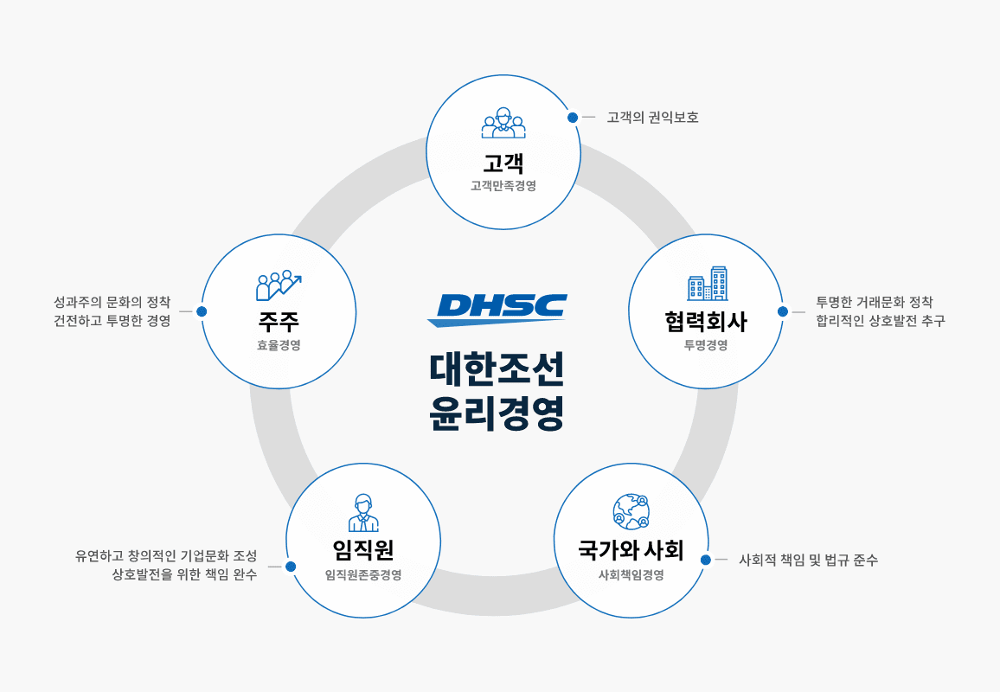
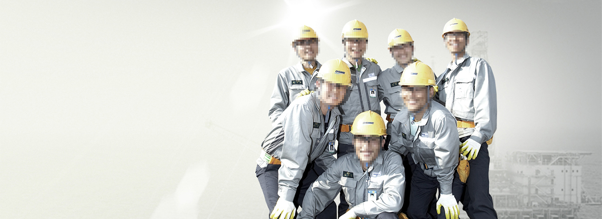

home > 지속 경영 > DSME 기업 윤리
기업 윤리
DSME 윤리경영
깨끗한 조직문화와 윤리적인 기업활동은 지속가능경영의 필수조건입니다.

대우조선해양은 윤리경영을 통해 건강한 기업문화를 가꾸고 사회적 책임을 다하는 것이 기업 본연의 의무임을 인식하고,
형식이나 체면이 아닌 내실 있는 윤리실천을 함으로써 신뢰받고 존경받는 영속기업이 되겠습니다.
윤리규범
대우조선해양은 최고의 제품과 서비스로 이해관계자들과의 공동 번영 을 추구합니다
- 고객이 기대하는 최고의 제품과 서비스를 적시에 공급하기 위하여 최선의 노력을 기울인다.
- 고객의 이익과 안전을 보호하고 고객에게 부당한 행위를 하지 않는다.
- 고객의 불만과 제안을 겸허하게 수용하며, 고객과의 약속은 반드시 지킨다.
- 합리적인 투자와 효율적인 경영활동으로 기업가치를 높인다.
- 주주의 권리와 정당한 요구를 존중하며 모든 주주를 공정하고 평등하게 대우한다.
- 회계자료의 처리 및 보고는 관계 법률과 회계기준을 준수한다.

- 적격한 모든 협력회사에 평등한 거래기회를 제공하며, 공정한 기준과 투명한 절차에 따라 협력회사를 선정한다.
- 모든 거래는 상호 대등한 위치에서 공정하게 이루어져야 하며, 어떠한 경우에도 부당한 방법으로 특혜나 피해를 주지 않는다.
- 상호 발전과 깨끗한 거래풍토를 조성하기 위하여 협력회사와 함께 노력한다.
- 임직원 개개인의 존엄성과 가치를 존중하고, 지연, 학연, 성별, 학력, 인종, 종교, 신체장애 등의 사유로 불합리한 차별을 하지 않는다.
- 임직원에게 깨끗하고 안전한 근무환경을 제공하고, 개개인의 창의적 사고를 장려하며, 성장과 발전의 기회를 공정하게 제공한다.
- 임직원을 능력과 업적에 따라 공정하게 평가하며, 합리적으로 보상한다.
- 임직원은 회사의 비전과 목표를 공유하고, 각자에게 부여된 사명을 성실히 수행한다.
- 건전한 이윤창출과 지속성장, 고용창출, 성실한 조세의 납부, 사회공헌 등을 통하여 사회와 국가경제 발전에 이바지한다.
- 지역사회의 전통과 문화를 존중하고, 지역사회의 발전을 위하여 노력한다.
- 자연보호와 공해방지, 자원절약을 위하여 노력한다.
CEO 윤리메세지
게임 체인저가 될 DSME

윤 리경영은 기업 생존과 성장을 위한 필수조건입니다. 그만큼 우리가 아무리 강조해도 지나치지 않을 금과옥조입니다
지금 대우조선해양은 시장 판도를 바꾸고 주도하는 ‘게임 체인저’가 되기 위한 노력을 쏟고 있습니다. 많은 이해관계자들과 경쟁하거나 협업하며 세계최고의 자리를 선점하는 기술 DSME를 세우고자 합니다. 이 과정에서 게임의 법칙은 항상 믿을 수 있고 공정해야 하며, 우리가 표본이 돼야 굳건한 위상을 영위할 수 있다고 믿습니다.
대우조선해양은 윤리와 원칙을 바탕으로 의사결정을 하고, 정보공유를 통해 공정한 문화를 만드는 투명한 회사가 되고자 하며, 이를 통해 내·외부로부터의 ‘신뢰’를 공고히 하고자 합니다.
이에 회사는 비윤리 행위 예방을 포함해 내부 감사와 자정 역할을 주도하는 감사위원회를 독립조직으로, 업무진단담당을 사장 직할로 운영하고 있습니다. 그 외에도 생산직, 사무기술직, 사내외 협력사 등 전 계층을 포함시킨 윤리쇄신위원회를 운영하고 있고, 인권보장을 위한 성희롱신고센터 등도 신설해 깨끗하고 건강한 회사를 만들기 위한 노력을 꾸준히 기울이고 있습니다. 조직 스스로도 부정행위 근절을 위해 업무절차를 개선하거나 시스템을 구축하는 등 제반 환경을 꾸준히 닦아놓고 있습니다.
하지만 무엇보다 중요한 것은 저를 포함한 임직원들의 실천일 것입니다. 윤리경영의 시작은 ‘자율실천’에 있습니다. 대우조선해양 임직원들은 현실과 타협하지 않고 기본과 원칙에 열정을 더해 직무윤리를 실현하고자 노력 합니다. 사장인 저부터 윤리적 리더십을 발휘해 당당하고 자랑스러운 대우조선해양을 만들겠습니다.
게임 체인저가 될 DSME는 앞으로 공정한 경쟁만 할 것입니다. 저부터 앞장서 실천하겠습니다. 그리고 우리 임직원들 역시 함께 뛸 것입니다.
감사합니다